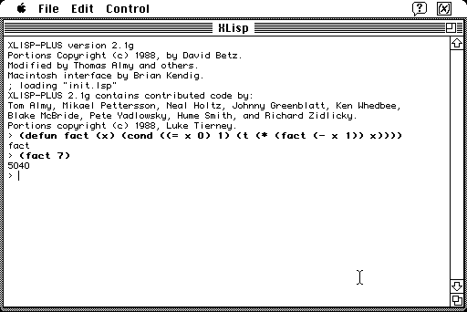

Download
xlisp2.1g.zip (336K) XLisp-Plus 2.1g for Macintosh repackaged into a zipped hfs disk image and checksum file. The disk image can be mounted with Mini vMac. Includes source code for Macintosh port.
xlisp2.1g.sit.hqx (471K) XLisp-Plus 2.1g for Macintosh in the original format.
xl21gsrc.dsk.zip (225K) XLisp-Plus 2.1g base source code repackaged into a zipped hfs disk image and checksum file. The disk image can be mounted with Mini vMac.
xl21gsrc.zip (262K) XLisp-Plus 2.1g base source code in the original format.
copyright: Brian Kendig, David Betz, and others
mod date: June 25, 1994
license: free for non-commercial use
official url (Macintosh 680x0 port no longer provided)
A Lisp interpreter.
"XLisp-Plus is based on XLisp, ©1988 by David Betz, all rights reserved. XLisp-Plus was written by Tom Almy. This Macintosh port is by Brian Kendig."

If you find these downloads useful, please consider helping the Gryphel Project, which hosts them.
Here are the md5 checksums for the downloads, signed with Gryphel Key 5:
--------- GRY SIGNED TEXT --------- 2ba22650fbe02b07943d5c595f53772b xlisp2.1g.zip 4c70fec339325cc5072b2ba53a9fa601 xlisp2.1g.sit.hqx 12fbbe21cfe34a8cf805b783ca382d3f xl21gsrc.dsk.zip 37132e1ca304497b5dbe4f33d613470a xl21gsrc.zip ------- BEGIN GRY SIGNATURE ------- Gry/4Xa8CFcUzxdN/KLBSZi8I0nGVerCWrKVb+Bf/nvqH235E2mAUZY47dJ7kXAf o/wnknqs1deJxmWfM4fKP0q7RSy5gWn5L+1Y3mfKNwuYAk0sWtTLgYFFS/to03DU WE2LDzY1g28eK0Oyfalw5IpU7MGqtJLPEt6IMb78nQNNdqMtR1boQ0yKg1h77J4j -------- END GRY SIGNATURE --------